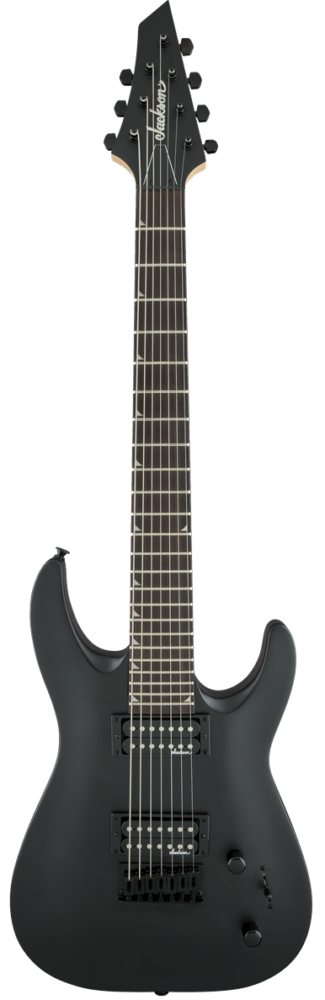
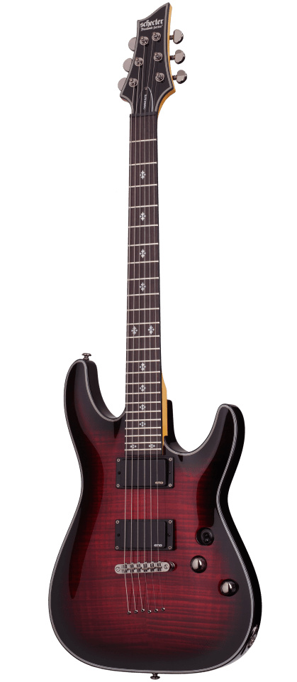
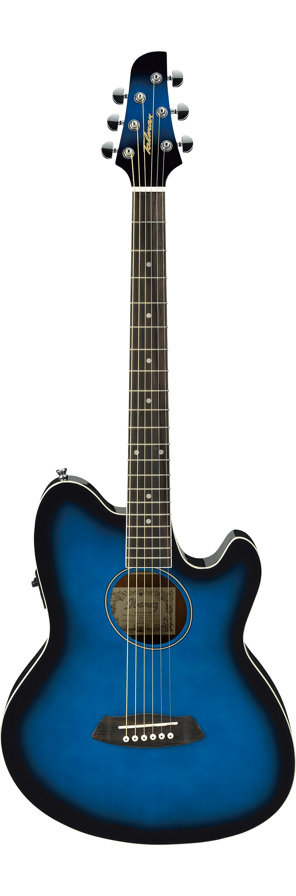
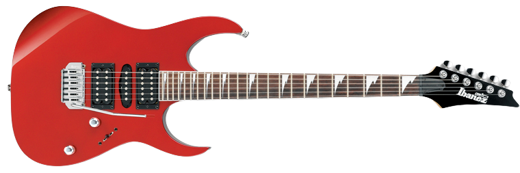
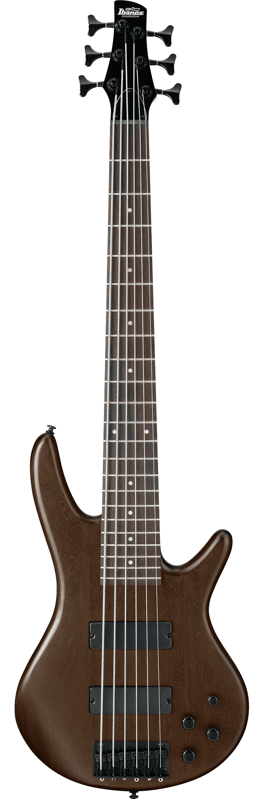
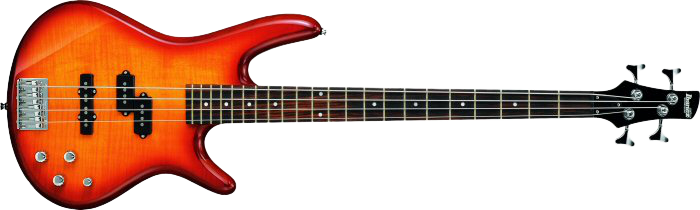
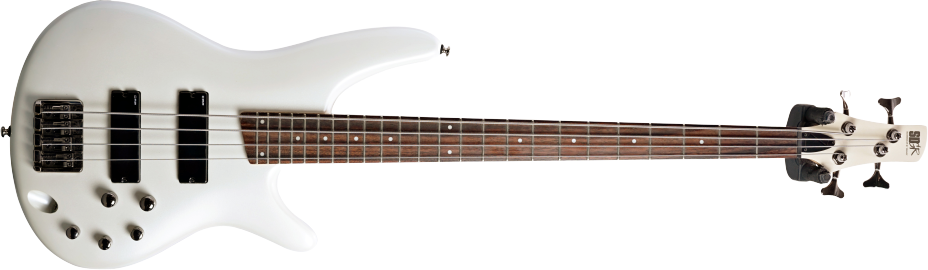

About Me
On this page, you can find some special details about my craft, such as which software I use or what instruments do I play.
Which software do I use?
For editing audio I use Cockos REAPER, I find REAPER quite powerful yet simple to use and is quite cheap too.
For editing videos, I use Adobe Premiere Pro. It's a powerful software for editing my videos. There are a lot of resources out there for learning premiere.
How do I get my guitar tone / musical tone?
I started using Ignite Amp's Emissary with MT Power Drum Kit. Then I acquired EZDrummer2 in a Toontrack sale for quite cheap. MT Power Drum kit is a versatile, powerful and free alternative to EZDrummer2.
I've been jumping back and forth between Line6 Pod Farm and Ignite Amps offerings. Recently the newest versions of the Emissary blow the Line6 emulations out of the water, so, I use those. I always use Rosen Digital / Lancaster Audio Mesa Oversized impulses.
For bass, I use TSE Audio BOD and Pulsar Smasher as my compressor.
My master track is Ozone Imager 2 for stereo imaging, TDR Kotelnikov as my master bus compressor, to keep the mix solid and Thomas Mundit LoudMax to keep the volume under control.
What are my musical roots/influences?
My dad is a metalhead himself since he was 16. It's from him that I acquired liking for both guitar and metal music.
Oddly enough, I enjoy more playing bass and listening to House music than metal.
My metal influences are short as I grew listening only to three metal bands: Killswitch Engage, Bullet For My Valentine and Lamb of God. Recently I opened my repertory a little bit listening to Ola Englund and Kamelot.
Other bands I used to listen while growing up were: Alien Ant Farm, Paramore, Lost Prophets, Linking Park and 30 Seconds to Mars.
I always felt that my metal compositions were a little bit stale and I got what I call a "metal fatigue" that lasted for 5 years. At that time I listened to electronic music, mostly from the Monstercat label.
I got to appreciate more genres and I grew a liking to other artists as well such as EDEN project, Vicetone, Nitro Fun, Cozi Zuehlsdorff, Laura Brehm, Post Malone, Residente and Bad Bunny just to name a few. Most of the arrangements that I add to my music, like the bass drop in The Minish Cap Boss Battle song, for example, came from listening to electronic music.
In my "metal fatigue" years I stopped playing guitar entirely, stopped listening to metal and consuming metal content in sites like YouTube. The only metal channel I followed was SpectreMediaGroup. I'm a big fan of Glenn Fricker's work.
Which gear do I use?
My setup is quite simple as I don't think I could use something more professional as I do this as a hobby.
I use a Focusrite Scarlett Solo as my Interface. It is hooked via USB to my PC and via RCA cables to my M-Audio AV 30 monitors.
I plug the guitar to the second input in the Scarlett interface. I also use an Audio-Technica AT2020 microphone connected to the first input of the interface.
Guitars
Jackson Dinky JS22-7 DKA TH Custom
I've bought this guitar recently as my father invited me to play with him live with one of his bands. My dad wanted to start playing in Drop tunning but the idea of carrying two guitars was quite daunting. The idea of a 7 strings came from Ola Englund visiting my city back in 2014 as he explained he plays 7 strings because he can tune the guitar in 7 strings Drop A tunning and play drop chords and riffs but also from the 6th string upwards, the tunning is E standard, so the ones my father composed in E standard can be played without the need of carrying two guitars.
The "custom" part of this guitar comes from a trip I made to Vancouver. I acquired a set of EMG 56/66 pickups for 7 string guitars, which are quite rare items in my region. These pickups were soap bars and wouldn't fit the F-type spaces. My best friend made the cuts to fit the pickups and also designed and 3D printed some pickup frames, the guitar now sounds fantastic.
Schecter Damien Elite 6 CBR
I've had this guitar for a long time now. It was a gift from a girlfriend way back in 2014. I tunned this guitar to Drop C Tunning. For a couple of years, it was tunned to Drop D tuning.
It was collecting dust and I don't have an interest in keep playing to Drop C tunning, so I returned it to Standard E. It will be my lead guitar from now on, starting with The Minish Cap Credits theme.
Ibanez Talman TCY10E TBS
This was the first guitar I bought saving money. I was a student at the time so this was quite the effort to me. This acoustic guitar plays fantastic and has accompanied me for 6 years now and still feels and plays like it is new. It is also quite versatile as it has been tunned in both Drop C and Standard E tunning for several years.
Ibanez GRG170DX CA
There's nothing I can say about this guitar. My dad traded an old netbook laptop for this guitar and even though it plays nice, there isn't anything special about it. It's a cheap guitar that could be a very good first guitar for someone starting playing guitar but compared to my other guitars, is not that impressive.
I used it in the intro of the Ballad of the Windish cover as a little easter egg to CSGuitar89's video as he used his Bullet Strat, which is the only time I used it in a video.
Basses
Ibanez GSR206B WNF
I got curious about the Bossa Nova genre, which I thought a 6 string bass would be a nice acquisition.
This bass is the 6 string version of the GSR200FM AMB. It's equally an active bass and it sounds amazing, even though it's a GIO bass. Talking about bass guitars, you can't go wrong with Ibanez.
I started using it in the Rest (Resident Evil 0 save theme) song.
Ibanez GSR200FM AMB
When I got back to play guitar I lacked a bass, the relative that I gifted the SR305 came to repay the favour and let me borrow this bass. I was surprised how versatile this bass is. I've been using it since Zelda's lullaby cover. I returned it as I got curious to play bossa nova music and I was in the hunt for a 6 string bass.
Ibanez SR300 PW
I purchased this bass a little while after I got the Schecter guitar. This bass was also tunned to Drop C. In my "metal fatigue" years this instrument was just collecting dust in my wall so I gave it as a gift to a relative.
Picks
For picks, I use Dunlop Jazz III 1.14mm picks for electric guitar and bass.
I don't use a particular material though I like the Ultex® variants more.
The ones I use at a given time are what delivers the fastest from amazon when my current picks wear out.
Strings
| Instrument | Product | Gauge | Tuning |
|---|---|---|---|
| Ibanez GSR206B WNF | Ernie Ball 6-String Long Scale Slinky Bass | .032-.130 | A-E-A-D-G-C |
| Ibanez Talman TCY10E TBS | Ernie Ball Earthwood Medium Light 80/20 Bronze | .012-.054 | E-A-D-G-B-E |
| Schecter Damien Elite 6 CBR | Ernie Ball Regular Slinky | .010-.046 | E-A-D-G-B-E |
| Jackson Dinky JS22-7 DKA TH Custom | Ernie Ball 7-String Super Slinky | .009-.052 | A-E-A-D-G-B-E |